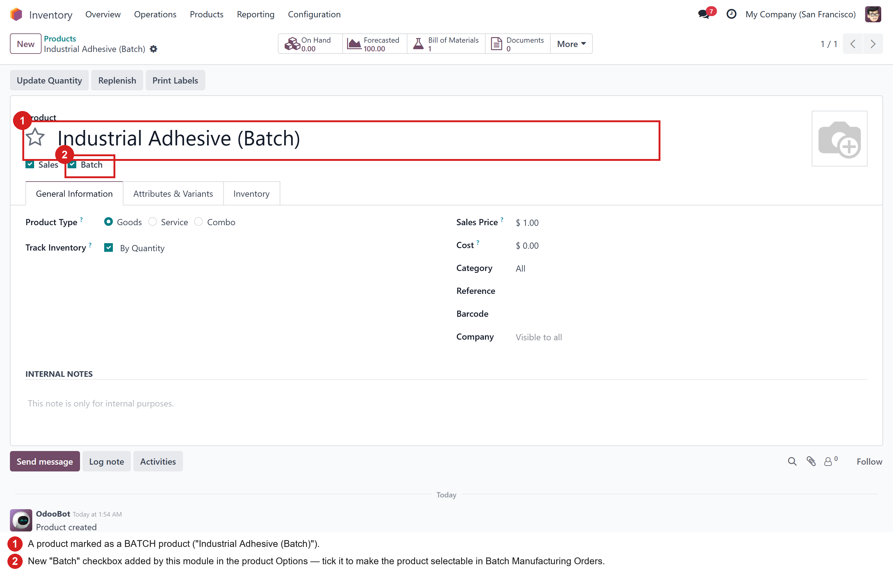
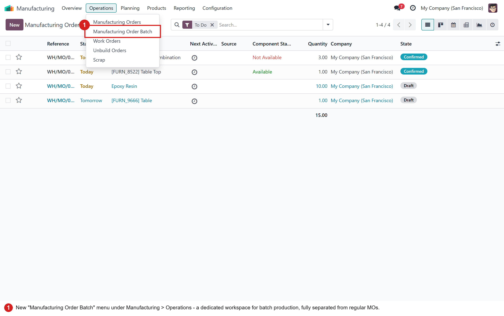
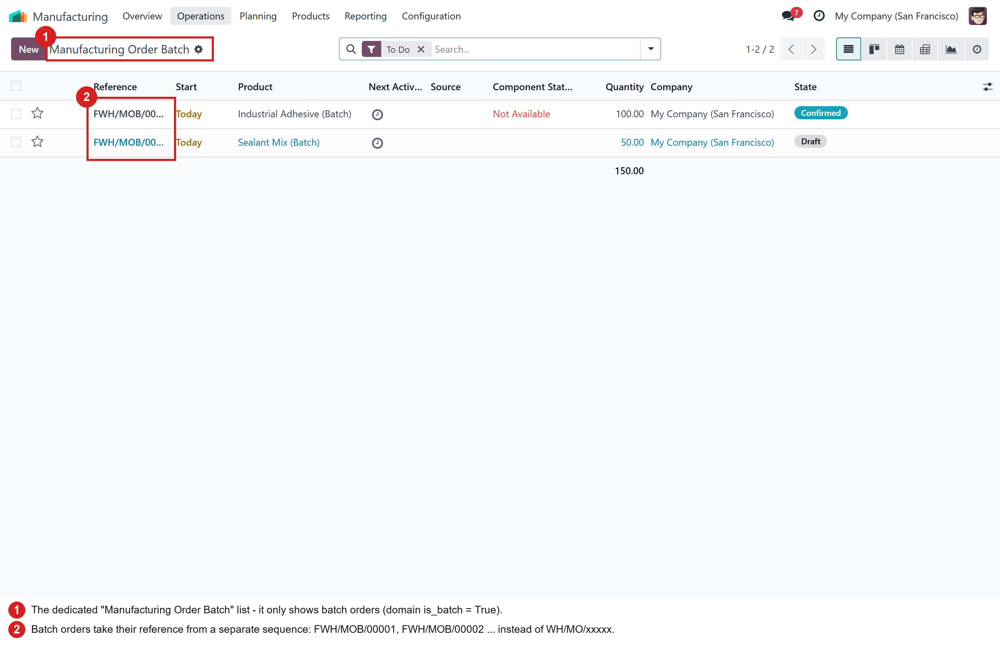
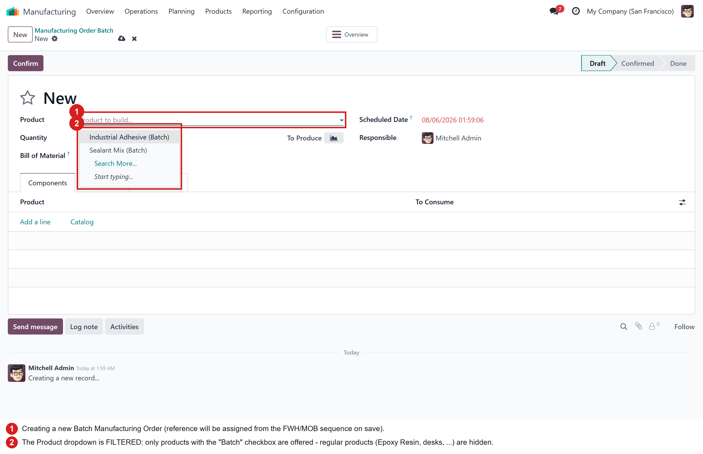
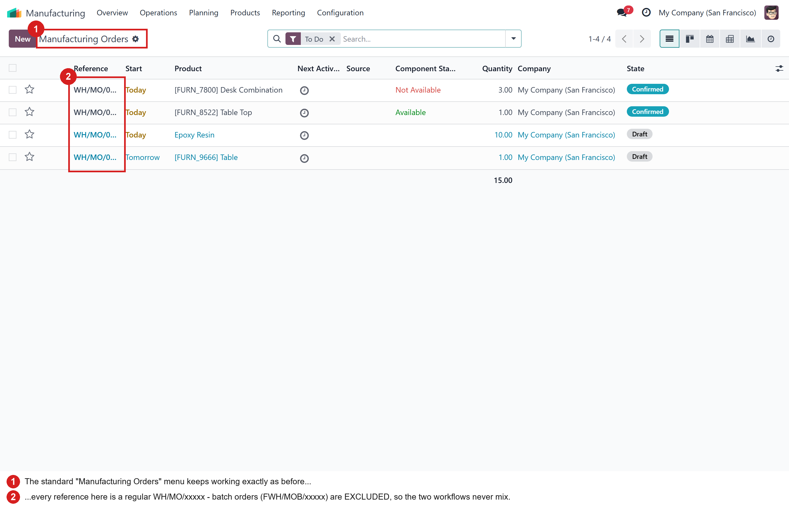
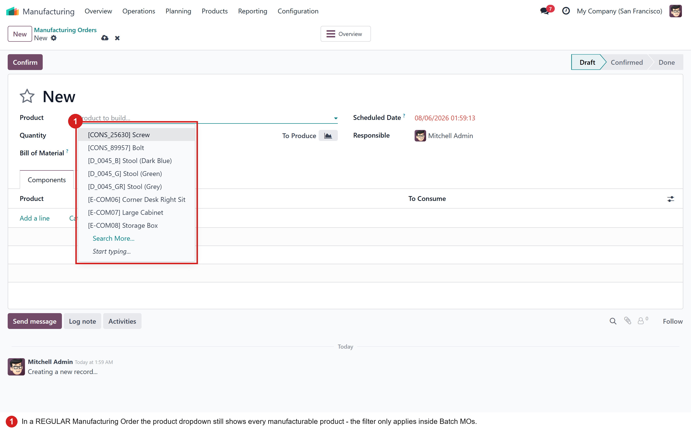

Run batch production side by side with regular manufacturing — a dedicated menu, a dedicated FWH/MOB reference sequence, and a product selector that only offers products flagged as Batch.
The module adds a Batch checkbox next to the other product options on the product form. Tick it on every product that is produced in batches. Regular products are left untouched.

A new Manufacturing Order Batch entry appears under Manufacturing > Operations, right below the standard Manufacturing Orders menu.

The batch workspace lists only batch manufacturing orders, and every order created here is numbered from a dedicated sequence — FWH/MOB/00001, FWH/MOB/00002, … — so batch production is instantly recognizable in references, reports and traceability documents. The prefix can be changed anytime in Settings > Technical > Sequences.

Inside a Batch Manufacturing Order, the Product dropdown (including Search More…) proposes only products whose Batch checkbox is ticked. No more picking a regular product in a batch order by mistake.

The standard Manufacturing Orders menu now excludes batch orders, so day-to-day production is not cluttered by batch runs — and in a regular MO the product dropdown still shows every manufacturable product.

